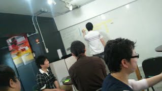

2013/06/08 土曜日 @ aipCafe

zusaar イベント告知ページ http://www.zusaar.com/event/764008
Togetterまとめ http://togetter.com/li/515742
＜htmlday＞ という全国同時開催勉強会に参加
＜htmlday＞とは、日本全国でWeb制作者／開発者向けのイベントを同日に開催することで、日本のWebを一層盛り上げようという「お祭り」です。
http://www.htmlday.jp/
自己紹介
- @nishiaki
- @Garyuten
- 三好さん
- アンダス藤さん
- 青木さん フリーのマークアップエンジニアさん
- Wordpressエンジニア 太田さん
- Wordbench福岡 ジョータキさん @tekapo
- エニセンス アルマさん
- @kebin
- @長嶺さん
- @kuronekomichael 婚活応援エンジニア なかしまこうき
- 福田さん from 佐賀
- マツモトさん from 佐賀 ※司会
- @cohtan
- @localdisk
- @pierrefrogman フロッグマンオフィス代表
- 吉井さん
17人+子供一人
勉強会の片隅で行われた化石の発掘
UXデザインについて
デザイナー育成方法は？
ノンデザイナーズ・デザインブック [フルカラー新装増補版] [単行本（ソフトカバー）]
https://docs.google.com/document/d/1qQ2GKYIaR2Eq8gt8nLNisArflC1eS4o-2cNSlU1OrUs/edit
スマフォのデザインで参考サイト
by 長峰さん
CSSのセレクタについて
by ナカシマコウキさん
- CSSの品質を保持したい。
- 書く時のID名とかClass名とか
- 社内で共有した参考資料の公開
UXの勉強の方法について
- どんな事を勉強すればいいか
- 基本で押さえておいた方がいい書籍とかサイトとか教えて欲しい
- 観察が大事 by @Garyuten
- 千葉工大安藤先生のスライドがオススメです slideshare.net/masaya0730/uxux
MovableType をどう思っているか聞いてみたい
by 藤さん
- 最近、MTを使える技術者が少なくて、皆さんに意見を聞いてみたい
- Perlの印象が強い by ＠cohtan
- 再構築地獄
- html書き出しが強い
- 何度も話題に上がっている話題
- MTの使える技術者の人と知り合いたい
- テーマコンテスト
Wordpressを使ってる方に、不満を感じてる所を聞きたい
by ジョータキさん
- メジャーアップデートが早い
- マニュアル（codex)をもっと充実して欲しい
- 動く関数があるのに、codexに載ってないことがある
- 例文をもっと書いて欲しい
- システムエンジニアとしてソースコードが読みづらい
- 管理画面をもっとカスタマイズを気軽にできるようにしたい
- プラグインが多すぎて探すのが大変。バージョン管理が大変になる。
- アタックが多いので管理が大変
- ダッシュボードに新着情報を最初から非表示にしてほしい
不動産物件紹介サイトでのアクセス解析について
by 三好さん
- どんな点を注力して見ているか
- 離脱率、アクティブユーザーを一番重視 by @kuronekomichael
- 毎朝、数字をメンバーで読み上げて共有している
- サービス改善した後は、離脱率などはかなり注視
- 最近は、継続利用期間（連続ログイン期間）を見たりしてる
- 参考サイト： 中古マンションと賃貸相場のイエマップ http://iemap.jp/
- 社内共有で「今、うちのWebサイトはこんな状態」という議論をしやすいデータを作りたい
- コンバージョンポイント（Goal）を明確にして動線を分析していく
- 興味がない社員対策→無視OK。下に合わせず、トップレベルが突き進んで、全体を押し上げればいいのでは。 by @Yaibe
クライアントさんと原稿・素材のやり取りをどうしてますか？
by 福田さん
- リスト化→Google Docsで共有→ 締切、担当を明記 @Yaive 他多数
- サイト移行の際は旧サイトから画像・テキストを全部流用してとりあえず当て込んで、たたき台を作る @cohtan @Yaive 他多数
- ダミーテキストはデザイナーが考えて提案する→人間は何もないとイメージがつきづらい。「ここは修正してほしい」って言わせる
- 契約書、発注書も大事
- 前金大事。システムだと発注時に半分支払ってもらう by 長嶺さん
技術進化に伴う将来の不安について
by @kebin
- 「お金をかけずに作れるツールが出てきてる。クライアントさんがコストを下げてきてる。将来に不安を感じてる」
- 作るのゴールにしてるのでは？制作側もコンサルティングが必要
- PDCAのサイクルを重視
- 小規模のお客さんには無料ツールで始めさせる。スモールスタートアップ
→運用されて、欲が出てきた頃にまた改めて提案する
- ホームページを作ることが目的ではない
- 無料ツールを使ってもらって、サポートに関しては有料設定に（1時間5000円とか）
特急制作について
by @nishiaki
- 適正価格ってあるじゃないd（ここでは言えない内容になったので省略）
テキストエディタでSublime Text 2で便利なプラグインあれば教えてください。生の声を聞きたい。
by アルマさん
- みんなどんなプラグイン使ってますか？
- sass対応エディタ → NetBeans 7.4からscss対応
俺の話を聞いて欲しい
by @cohtan
福岡以外の場所で働いてみませんか？宮古島はクリエーターパラダイス
by @pierrefrogman
- 宮古島っていいよ。
- 開発合宿に使ってみた
- Amazonの送料変わらない。
- ベスト電器もあるし、コンビニもユニクロもある。
- 空港がちゃんとしている
- ネットが速い
- 移住者が凄い（クリエーター系）
- 東京、名古屋のweb制作会社の創業者
- テック系ライター、アプリ開発者
- テレビディレクター等
- Re:charge Project https://www.facebook.com/rechargemiyako
- 片道14,000円 3時間ぐらい。全座席にコンセント付き
- 一泊2000円から〜 言ってくれたら2人ぐらいなら部屋貸しますよ by @pierrefrogma
制作会社の中でCMSのとかEC構築とか何を使うか決めてますか？
by 吉井さん
- いろんなCMSやツールとかある中で、制作会社の中で何を使うか決めてますか？
- 中小規模の制作会社は、たぶん決めてない所が多い
- だいたいTPO（予算、環境、学習コストなどなど）
- どんなサイトになるか決めるまでCMSは決めない
- webマスターがいないクライアントさんだったらCMS提案するよりも、制作会社と毎月保守料金設定して運営・更新していったほうがお互い幸せなケースもある
- どうしてもblog書きたいクライアントさんには、facebookも提案の一つ
自慢大会
by @Yaive
- 最近やったお仕事、やってるお仕事
- 提案超大事
- 元々10万円の仕事→提案で1*0万円の仕事に
- ブランディング大事。web制作はその一つの要素。
- 言われてもないのに、ロゴデザインをして、さらにアプリケーション(名刺、封筒など)デザインもして、実際にそれを印刷して切り貼りで作成して、お客さんに見せてドン引きさせてきた提案
SEOを依頼されてきた時のお話
by 青木さん
- SEOSEOいうな by @nishiaki
- SEOへの施策（HTMLの最適化とか）はやってて当たり前
- コンテンツ大事
- SEO業者は論破するに限る
- 画像置換は＜悪＞なの？？
webアクセシビリティのサンプル本
by @Garyuten
クライアントさんとのやり取りで「言った、言わない」みたいなトラブルを回避するにはどうしてますか？
by 松本さん
- クライアントさんと仲良い関係を作ること
- キックオフ飲み会とか
- コンサルを挟むとややこしいけども、良好な関係を気づくための努力は大事
超ローカルコミュニティの話
by @nishiaki
Webアプリを作る時の相談
by 長嶺さん
- macがいいですか？ → みんなMacなんで買います！
Creative Center Fukuoka の宣伝
by @Yaive
- 大型案件はなかなか受けれない
- クリエイティブセンター福岡 http://ccf.jp.net/
- フリーランサー達をまとめて仲介できる仕組み
- 育成制作案件の仕組み：未就業新人を如何に制作会社の正社員まで育てるか
懇親会 aipCafeで行いました。
HTML5+α福岡、福岡マークアップ勉強会、baserCMSユーザー会と合流し、合同懇親会を行いました。
|